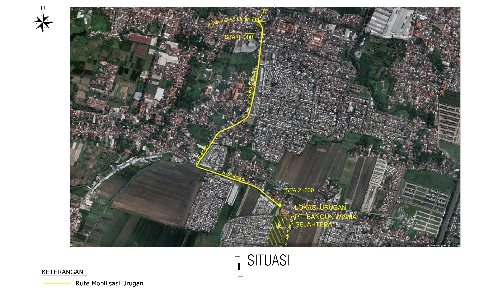
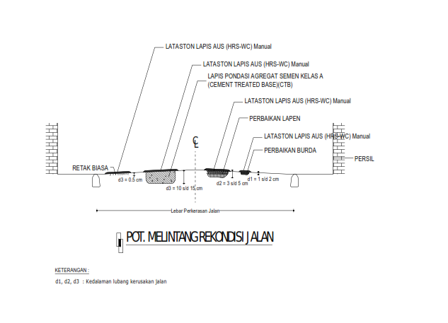

| Sidoarjo, {{-- --}} | |||||
| Kepada | |||||
| Nomor | : | {{-- --}} | Yth. |
YANUAR SUSILO, M.EengSc
(DIREKTUR UTAMA PT. BANGUN WISMA SEJAHTERA) |
|
| Sifat | : | Penting | Jl. Darmo 165 | ||
| Lampiran | : | - | di | ||
| Perihal | : | {{-- --}} | SURABAYA | ||
| {{-- --}} Mendasari | |||||
| 1. | Surat Dinas Penanaman Modal Dan Pelayanan Terpadu Satu Pintu Kabupaten Sidoarjo Nomor : 503-L/533/438.5.16/2019 Tanggal 18 Desember 2019 perihal Persetujuan Izin Lokasi yang diterbitkan oleh Lembaga OSS untuk kegiatan Perumahan yang berlokasi di Desa Jambangan Kecamatan Candi Kabupaten Sidoarjo seluas ± 45.000 m 2 Atas Nama Sdr. YANUAR SUSILO (PT. BANGUN WISMA SEJAHTERA); | ||||
| 2. | Surat Permohonan Sdr. YANUAR SUSILO, M.EngSc (DIREKTUR UTAMA PT. BANGUN WISMA SEJAHTERA) Nomor : BWS-SG3/016/XI/2022 Tanggal 30 Nopember 2022 perihal : Permohonan Rekomendasi Pemanfaatan Jalan Untuk Mobilisasi Angkutan Sirtu; | ||||
| 3. | Surat Pernyataan Sdr. YANUAR SUSILO, M.EngSc (DIREKTUR UTAMA PT. BANGUN WISMA SEJAHTERA) tentang kesediaan memperbaiki jalan yang rusak akibat transportasi kegiatan pengurukan; | ||||
| 4. | Berita Acara Peninjauan Lokasi Rekomendasi Pemanfaatan Jalan tanggal 13 Nopember 2022. | ||||
| Dengan pertimbangan di atas dan ketentuan yang ada Saudara diberikan Rekomendasi Pemanfaatan Jalan untuk mobilisasi angkutan sirtu yang melalui Ruas Jl. Sepande - Suko (gambar rute terlampir) untuk kegiatan Perumahan (Pembangunan Perumahan) di Desa Jambangan Kecamatan Candi Kabupaten Sidoarjo dengan ketentuan sebagai berikut : | |||||
| a. | Melakukan koordinasi dengan instansi terkait dilokasi kegiatan pembangunan; | ||||
| b. | Wajib melakukan sosialisasi di lokasi kegiatan sebelum pekerjaan dilaksanakan; | ||||
| c. | Segala kerusakan jalan, jembatan, utilitas lain dan semua permasalahan yang terjadi sebagai akibat diterbitkannya Rekomendasi Pemanfaatan Jalan ini menjadi tanggung jawab PT. BANGUN WISMA SEJAHTERA; | ||||
| d. | Maksimum sumbu terberat kendaraan 8 Ton; | ||||
| e. | Surat Rekomendasi ini berlaku selama 90 (sembilan puluh) hari kalender sejak tanggal surat dikeluarkan; | ||||
| f. | Bak truck wajib ditutup untuk menghindari tercecernya material; | ||||
| g. | Wajib menempatkan petugas di lokasi guna mengatur kelancaran lalu-lintas; | ||||
| h. | Mengatur jam operasional armada angkutan guna menghindari kemacetan; | ||||
| i. | Apabila truck akan keluar dari lokasi kegiatan urugan diharuskan membersihkan material yang melekat di roda agar tidak tercecer dan mengotori jalan aspal yang dilalui; | ||||
| j. | Apabila tingkat kerusakan jalan mengakibatkan terganggunya pemakai jalan yang lain, maka pemegang Rekomendasi wajib melaksanakan perbaikan jalan terlebih dahulu dan kegiatan mobilisasi angkutan sirtu dapat dilanjutkan sampai masa berlaku Rekomendasi dan apabila perbaikan jalan tidak dilaksanakan sehingga mengakibatkan kecelakaan pengguna jalan, segala konsekuensinya menjadi tanggung jawab PT. BANGUN WISMA SEJAHTERA; | ||||
| k. | Ijin ini hanya digunakan sebagai rekomendasi teknis dalam rangka penggunaan jalan kabupaten untuk mobilisasi angkutan sirtu; | ||||
| l. | Apabila pelaksanaan pekerjaan belum selesai sampai masa berakhirnya Surat Rekomendasi, maka pihak pemegang rekomendasi segera berkoordinasi dengan Dinas PU Bina Marga Dan Sumber Daya Air Kabupaten Sidoarjo serta mengajukan surat permohonan perpanjangan 1 (satu) minggu sebelum berakhirnya Surat Rekomendasi. | ||||
| {{-- --}} | |||||
| Demikian Surat Rekomendasi Pemanfaatan Jalan ini kami berikan untuk dipergunakan sesuai ketentuan dan atas perhatiannya disampaikan terima kasih. | |||||
|
KEPALA DINAS PEKERJAAN UMUM BINA MARGA DAN SUMBER DAYA AIR |
|||||
| KABUPATEN SIDOARJO | |||||
|
{{-- |
|||||
| Ditandatangani secara elektronik oleh | |||||
|
{{--
--}}
NIP. {{-- --}} |
|||||
|
{{--
--}}
{{-- --}} NIP. {{-- --}} |
|||||
|
Tembusan :
Yth |
|||||
| l. | Bpk. BUPATI SIDOARJO (Sebagai Laporan) | ||||
| 2. | Sdri. Kadin Perhubungan Kabupaten Sidoarjo | ||||
| 3. | Sdr. Kadin Penanaman Modal dan Pelayanan Terpadu Satu Pintu Kabupaten Sidoarjo | ||||
| 4. | Sdr. Kepala Satpol PP Kabupaten Sidoarjo | ||||
| 5. | Sdr. Kadin Perumahan, Permukiman, Cipta Karya dan Tata Ruang Kabupaten Sidoarjo | ||||
| 6. | Sdr. Kadin Lingkungan Hidup dan Kebersihan Kabupaten Sidoarjo | ||||
| 7. | Sdr. Camat Sidoarjo | ||||
| 8. | Sdr. Camat Candi | ||||
| 9. | Sdr. Kapolsek Sidoarjo | ||||
| l0. | Sdr. Kapolsek Candi | ||||
| l1. | Sdr. Kades Suko | ||||
| l2. | Sdr. Kades Sidodadi | ||||
| LAMPIRAN SURAT REKOMENDASI PEMANFAATAN JALAN | |||||
| Nomor | : 620/180/438.5.3/2023 | ||||
| Tanggal | : 27 Januari 2023 | ||||
|  | Judul Gambar | |
|---|---|---|
RUTE MOBILISASI URUGAN MELALUI :
|
||
| Pemohon | ||
|
YANUAR SUSILO, M. EngsC DIREKTUR UTAMA PT. BANGUN WISMA SEJAHTERA
Jl. Darmo 165 Surabaya |
||
|
Sidoarjo, 27 Januari 2023
Menyetujui KEPALA DINAS PEKERJAAN UMUM BINA MARGA DAN SUMBER DAYA AIR KABUPATEN SIDOARJO |
{{-- |
Ditandatangani seca elektronik oleh |
| Ditandatangani seca elektronik oleh | ||
|
DWI EKO SAPTONO, S.Sos., MM , MT
Pembina Tk. I NIP. 1970022 199003 1 002 |
||
| NOMOR GAMBAR | JUMLAH GAMBAR | |
| 1 | 2 | |
|  | Judul Gambar | |
|---|---|---|
RUTE MOBILISASI URUGAN MELALUI :
|
||
| Pemohon | ||
|
YANUAR SUSILO, M. EngsC DIREKTUR UTAMA PT. BANGUN WISMA SEJAHTERA
Jl. Darmo 165 Surabaya |
||
|
Sidoarjo, 27 Januari 2023
Menyetujui KEPALA DINAS PEKERJAAN UMUM BINA MARGA DAN SUMBER DAYA AIR KABUPATEN SIDOARJO |
{{-- |
Ditandatangani seca elektronik oleh |
| Ditandatangani seca elektronik oleh | ||
|
DWI EKO SAPTONO, S.Sos., MM , MT
Pembina Tk. I NIP. 1970022 199003 1 002 |
||
| NOMOR GAMBAR | JUMLAH GAMBAR | |
| 1 | 2 | |